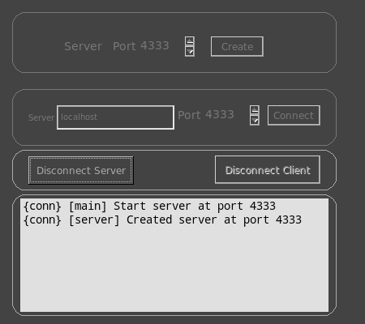

Manejo de Conexiones
|  |
La ventana de conexiones te permite controlar dos o mas mrViewers desde una sola interfaz, lo cual puede ser util al pasar revista a las animaciones del día.
|
Para usarla, usted debe crear un servidor en un puerto libre. El puerto por defecto 4333 debería funcionar bien la mayoría de las veces.
Una vez que un servidor es creado, los clientes pueden conectarse a él con el nombre de la máquina y puerto. El nombre de la máquina es por defecto "localhost" que es una conexión local a la máquina local (dos visores corriendo en la misma máquina). Si accede a dos visores de distintas localidades usted debe especificar el nombre de la máquina remote asi como el número del puerto.
x
Puedes tambien crear el servidor o el cliente con la linea de comandos, usando:
> mrViewer -p [port number] # para crear un servidor.
> mrViewer -t [hostname] -p [port number] # para crear un cliente.
Si todo va bien, veras en el servidor:
{conn} [server] Created server at port 4333
Y en el cliente verás:
{conn} [main] Start client at mymachine, port 4333
{conn} [client] Trying 128.92.30.1:4333...
{conn} [client] Connected to 128.92.30.1:4333
El cliente chequeará todas las imágenes y carretes del servidor y los imitará lo mejor que pueda, asumiendo que todos los caminos son visibles desde ambas máquinas.
Desde entonces, verás un diferente {conn} mensaje cada vez que las dos instancias de mrViewer se comuniquen sobre un cambio.